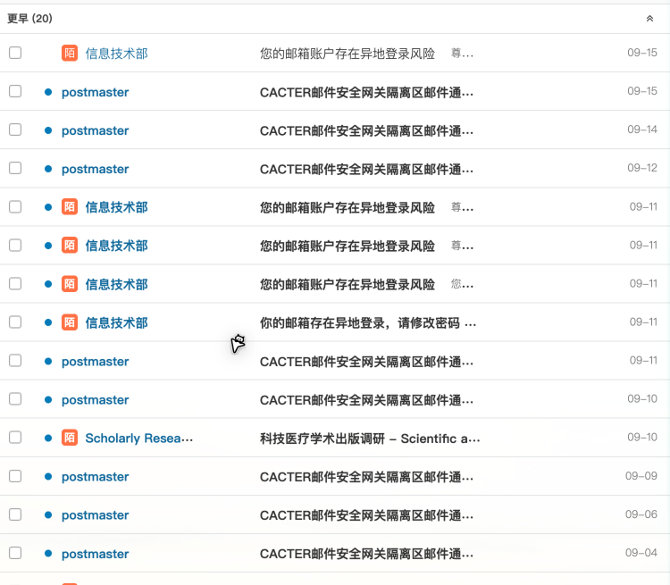

别急着点 · 校园钓鱼邮件识别 · 8 讲互动课
别急着点：校园钓鱼邮件识别
第 1 讲 · 为什么会上当
钓鱼邮件骗的不是技术，是哪几种本能？
面向云南大学师生 · 8 讲讲义 + 8 份离线课件
本讲先介绍整门课程，再进入为什么会上当
← → 翻页 · 空格逐步展开 · 双击 HTML 即可离线观看
本讲先介绍整门课程，再进入为什么会上当
← → 翻页 · 空格逐步展开 · 双击 HTML 即可离线观看
课程 · 定位
这门课练的是换通道核实，不是记住破绽
✅ 要练会的三件事
看懂邮件要你做什么；在关键处停下来核实；判断不了时走正确的下一步。
看懂邮件要你做什么；在关键处停下来核实；判断不了时走正确的下一步。
❌ 不做的三件事
不背破绽清单；不当安全专家；不讲复杂攻防技术。
不背破绽清单；不当安全专家；不讲复杂攻防技术。
面向：全校师生。不需要技术背景，也不需要记住任何术语。
判断标准：收到一封催你点击的邮件，你能不能先停六秒，再换一条通道核实。
课程 · 设计思路
人工智能写的邮件没有错别字，破绽清单正在过期
| 老办法 | 为什么曾经管用 | 今天的问题 |
|---|---|---|
| 找错别字 | 过去发信人粗糙 | 人工智能写得几乎完美，没有错别字 |
| 看排版 | 过去格式混乱 | 模板规范，和真通知几乎一样 |
| 盯附件 | 过去附件可疑 | 换成链接、二维码，清单里没有 |
破绽会过期，动作不会：清单是静态的，而「它要你做什么」是每次都在的。
本讲要回答的问题：既然破绽靠不住，骗子到底骗的是人的什么？
课程 · 内容地图 ①
第 1–4 讲：先认链，再拆一封信的前半段
| 讲 | 主题 | 一句话定位 |
|---|---|---|
| 1 | 为什么会上当 | 三种本能，从本校演练邮件说起 |
| 2 | 攻击链六步 | 拉出全程，标出能刹车的位置 |
| 3 | 谁发的：发件人与陌字标识 | 从显示名走到真实地址 |
| 4 | 它说什么：话术与时间压力 | 为什么越紧急越该慢 |
第①组认识这条链（1–2） 第②组四个检查点（3–6）
课程 · 内容地图 ②
第 5–8 讲：拆完信，再练处置与验收
| 讲 | 主题 | 一句话定位 |
|---|---|---|
| 5 | 要你点什么：链接与假登录页 | 读出真实地址，别信显示文字 |
| 6 | 要你开什么：附件、二维码与转账 | 验证码绝不能给任何人 |
| 7 | 不确定怎么办：核实与上报 | 不点、换通道、上报三步 |
| 8 | 结业演练：一个模拟收件箱 | 十二封信，把动作练成习惯 |
第②组四个检查点（3–6） 第③组从判断到动作（7–8）
课程 · 主线骨架
一条攻击链，四个能停下来的检查点
flowchart LR
A["伪装身份"] --> B["制造触发"] --> C["诱导动作"] --> D["骗取凭据"]
A --> A1["谁发的"]
B --> B1["说什么"]
C --> C1["点哪里"]
D --> D1["开什么"]
D --> E["换通道核实"]
E --> F["按流程上报"]
四检查点：谁发的 → 说什么 → 点哪里 → 开什么；收尾动作：换通道核实、按流程上报。
第三到第六讲逐一展开四个检查点，第七讲收成一个动作；本讲先看链的全貌。
课程 · 每讲结构
互动不是加个按钮，是先停再判
1抛场景：先把你放进当场要决定的处境
2摊例子：逐字段标注邮件哪里在推动你
3暂停演练：先自己判一遍，再揭晓答案
4误区辨析 + 接口 + 小结：纠正想错，接住下一讲
讲义负责可查的细节与对照表；课件负责主线、因果和误区。两者不是同一份内容的两种排版。
课程 · 案例说明
案例从哪来，为什么全部脱敏
📮 两类来源
本校真实演练邮件的脱敏截图；按我校样式自制的仿真样本。
本校真实演练邮件的脱敏截图；按我校样式自制的仿真样本。
🕶 脱敏规则
姓名换某老师，邮箱换示例地址，学号工号一律用占位。
姓名换某老师，邮箱换示例地址，学号工号一律用占位。
课件里的地址都是占位，不是真的，不要去访问；要学会的是话术套路，不是记住某一封邮件。
课程 · 怎么用
先讲义后课件，暂停要真暂停
📖 学习顺序
讲义案例 → 课件主线 → 暂停演练 → 合上复述 → 下一讲
讲义案例 → 课件主线 → 暂停演练 → 合上复述 → 下一讲
🛠 操作
← → 翻页；空格展开分步；地址加 ?slide=5 直达第 5 页；加 ?autohide=1 隐藏控件、全显分步，便于截图（录课请用 armed=1）
← → 翻页；空格展开分步；地址加 ?slide=5 直达第 5 页；加 ?autohide=1 隐藏控件、全显分步，便于截图（录课请用 armed=1）
进度存在本机浏览器，换设备不同步；三句话小结请合上页面自己复述，别只是读过。
第 1 讲 · 第①组 认识这条链
为什么会上当：骗子骗的不是技术，是本能
钓鱼邮件骗的不是技术，是哪几种本能？
🎯 本讲要回答
权威、紧急、利诱三类触发，各自按住了人的哪种本能。
权威、紧急、利诱三类触发，各自按住了人的哪种本能。
🧭 学完能做到
复述演练邮件经过，指出情绪压过判断那一刻，并说出应对动作。
复述演练邮件经过，指出情绪压过判断那一刻，并说出应对动作。
起点：一封邮件出现在收件箱。下一讲把它拆成一条六步攻击链。
定位
第 1 讲：先看清敌人怎么工作
flowchart LR
A["第1讲 为什么会上当"]:::here --> B["第2讲 攻击链六步"] --> C["第3到6讲 四个检查点"] --> D["第7讲 核实与上报"] --> E["第8讲 结业演练"]
classDef here fill:#2b6cb0,color:#ffffff,stroke:#1a365d,stroke-width:3px
本讲解决「为什么想点」：认出三种本能，后面检查点才有拦的对象。
本讲牵着两讲：第 2 讲把这次上当拆成六步链，第 3 讲进入第一个检查点。
主线
上当地图：从收到信到交出账号
1邮件到达：一封看似平常的信进收件箱
2显示名声称来自学校部门：信任感先建立
3制造紧急或利益：情绪触发点，二十四小时后冻结
4情绪压过怀疑：来不及多想
5按下链接或打开附件：动作已经发生
6账号或信息失守：终点，损失不可逆
骗子不攻系统，攻的是「先行动、后思考」的反射；橙色是触发点，红色是失守终点。
定义
三种本能：怕出事、信权威、怕错过
| 本能 | 它按住了什么 | 本校常见说法 |
|---|---|---|
| 权威 | 服从老师、领导、官方部门 | 自称信息技术部、教务处 |
| 紧急 | 怕出事、怕错过 | 二十四小时后冻结、今天最后一天 |
| 利诱与恐惧 | 贪好处、怕坏结果 | 奖助学金、成绩、工资条、账号冻结 |
三者常叠加出现，权威加紧急是最有效的组合拳；记住这三根弦，再去认邮件按的是哪一根。
案例 · 真实截图
我校邮箱里的原封信，长这样

真实截图 · 已脱敏：左上「陌」标、发件人「信息技术部」、「24 小时后冻结」话术、「系统验证」链接，都是原信里的真实样子。
例子 · 本校演练邮件
案例一：一封自称信息技术部的冻结通知
发件人信息技术部（显示名）
主题您的邮箱账户存在异地登录风险
正文话术为保障系统安全，账户将于 24 小时后冻结，请立即点击系统验证
链接文字系统验证phishsim.cacter.com/verify非校内域名
判定：权威加紧急同时上场，没有错别字，靠的不再是破绽，而是那句二十四小时后冻结推你动手。
误区
「我没钱没权限，骗我没用」是错觉
主题：关于发放本学期奖助学金的通知
正文：同学您好，您的奖助学金已审批通过，请于今日内点击链接确认收款账户，逾期视为放弃。
链接：领取补助 → phishsim.cacter.com/award
利诱话术：好处加时限，和上一封的冻结通知是同一套结构，只是把怕换成贪。
❌ 我没钱没权限，骗我没用
✅ 骗子要的是账号本身：拿你的通讯录群发、冒充你找亲友要钱、把你的电脑当跳板。
✅ 骗子要的是账号本身：拿你的通讯录群发、冒充你找亲友要钱、把你的电脑当跳板。
别用自己的身家衡量值不值得被骗；骗子赌的，就是你这一次点击。
案例 · 真实截图
真实收件箱：带「陌」的，不都是钓鱼

真实截图 · 已脱敏：同一列表里多封「信息技术部」邮件与一封正常学术邮件都带橙色「陌」——陌是陌生来信提示，不是钓鱼判决。
例子 · 本校收件箱列表
案例二：列表里那个橙色的「陌」
陌列表行 1信息技术部 您的邮箱账户存在异地登录风险 09:12
陌列表行 2学术期刊编辑部 本期稿件录用通知 15:40
列表行 3某老师 关于下周组会的安排 16:05
同一个列表里，演练邮件和正常外校学术邮件都带陌标；第三行熟人的信不带，但也不代表一定安全。
「陌」= 陌生来信提示，不是钓鱼判决：它只说请多看一眼，核实之后才下结论。
避坑
关于「陌」字的三种想错
❌ 带「陌」就是钓鱼
✅ 陌只表示陌生来信；正常外校学术邮件也带，它是提示不是判决。
✅ 陌只表示陌生来信；正常外校学术邮件也带，它是提示不是判决。
❌ 没有「陌」就可以放心点
✅ 熟人邮箱被盗后发来的信不带陌，一样危险；陌不是安全证书。
✅ 熟人邮箱被盗后发来的信不带陌，一样危险；陌不是安全证书。
❌ 「陌」是因为邮件有错别字
✅ 它只看发件人是否陌生，与正文写得多好毫无关系。
✅ 它只看发件人是否陌生，与正文写得多好毫无关系。
正确姿势：陌是免费线索，看到就多看一眼，展开真实地址核对域名，第 3 讲展开讲怎么核。
演练
这封信，先自己判一遍
发件人：信息技术部
主题：您的邮箱账号存在异地登录风险
正文：账户将于 24 小时后冻结，请立即点击系统验证完成身份核验
按钮：系统验证 → phishsim.cacter.com/verify
① 它要你做什么？点击系统验证。
② 按的是哪种本能？权威加紧急。
③ 正确动作：不在信里点，改走官方入口，并上报。
✍️
暂停演练
先自己判一遍：要你做什么、按哪种本能、你会不会点，再翻答案。
按空格 / → 逐步揭示答案
拆解
情绪压过判断，就发生在这一刻
① 扫列表：看到信息技术部，默认它是官方。
② 读主题：异地登录风险，注意力被抓住。
③ 读正文：二十四小时后冻结，时间压力上来。
④ 情绪压过怀疑：不再问真假，只问怎么快点弄好——转折点就在这里。
⑤ 按下链接：动作发生，后面就是失守。
在第四步之前插一句「先停六秒，换通道确认」，打断这一下，整条链就断了。
按空格 / → 逐步展开经过
核心机制
破绽会过期，动作不会
⏳ 破绽会过期
错别字、排版、固定话术，会随人工智能和手法更新而失效，清单跟不上。
错别字、排版、固定话术，会随人工智能和手法更新而失效，清单跟不上。
🔒 动作不会
先停六秒、不在信里动作、换通道核实、拿不准上报，与邮件长相无关。
先停六秒、不在信里动作、换通道核实、拿不准上报，与邮件长相无关。
破绽会过期，动作不会 —— 把防线从找特征挪到管住手
换成人工智能写的邮件也一样：它写得再像真的，终究要你做一个动作，而动作是你能拦的。
应对
认出身上第一个信号，把它变成动作
信号：心里咯噔、急着想点又犹豫、不想让人知道——它比任何破绽都早。
动作一：先停六秒，不立刻回应。
动作二：换通道核实，离开这封信走官方入口或电话，绝不在信里动作。
动作三：拿不准就上报信息技术中心。
核实通道必须独立于这封邮件：别用信里给的链接或电话。
接口
第 1 讲认本能，第 2 讲拆链路
| 第 1 讲 | 第 2 讲 | |
|---|---|---|
| 粒度 | 三种本能，一封邮件 | 六步攻击链，全程 |
| 核心对象 | 权威、紧急、利诱、那一刻 | 伪装、投递、触发、诱导、收集、利用 |
| 留下的问题 | 为什么想点 | 怎么走的，在哪能刹车 |
钩子：第 3 讲进入第一个检查点——谁发的，从显示名走到真实地址。
小结
三句话讲完第 1 讲
1解决什么：认出三种本能，指出情绪压过判断那一刻
2核心机制：骗子攻的是反射；破绽会过期，动作不会
3承上启下：为什么想点交给第 2 讲，第 3 讲起讲四个检查点
看到催你点的，先停六秒，换一条通道核实
第 1 讲 结束
破绽会过期，动作不会
毕业挑战：合上页面，拿一张纸
☑ 说出三种本能各利用了什么心理 ☑ 复述演练邮件经过并指出那一刻
☑ 解释我没钱骗我没用为何是错觉 ☑ 写出第一个信号和三个应对动作
下一讲 · 第 2 讲 攻击链六步：把这次上当拆成一条六步攻击链
☑ 解释我没钱骗我没用为何是错觉 ☑ 写出第一个信号和三个应对动作
下一讲 · 第 2 讲 攻击链六步：把这次上当拆成一条六步攻击链
第1讲 为什么会上当 · 别急着点：校园钓鱼邮件识别 课件 讲义首页 ↗内容由 AI 生成
1 / 1
← → 翻页 · 空格下一页 · 推导页逐步显示 · 点击左右半屏翻页